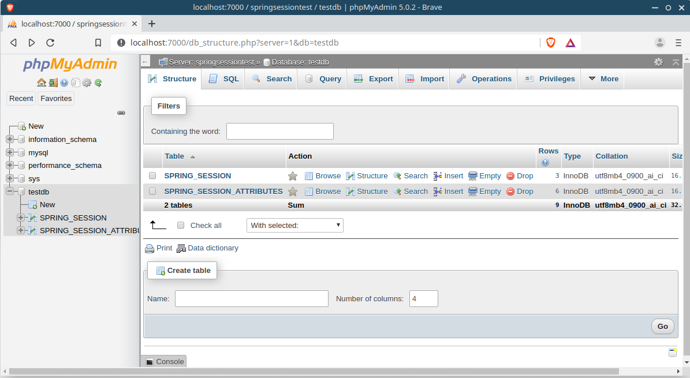

Spring Session Jdbc Demo
Spring Session Jdbc is very similar to Spring Session Redis.
Start MySQL Server You can start MySQL and Phpmyadmin server using Docker container
1 2 3 4 5 6 7 8 9 10 11 12 13 14 15 16 17 18 19 20 #!/bin/bash docker network create sample-network docker run -d --name=springsessiontest \ --network=sample-network \ -e MYSQL_ROOT_PASSWORD=password \ -p 3306:3306 \ mysql:8 docker run -d --name springsessionuitest \ --network=sample-network \ -e PMA_HOSTS=springsessiontest \ -e PMA_PORT=3306 \ -e PMA_USER=root \ -e PMA_PASSWORD=password \ -p 7000:80 \ phpmyadmin/phpmyadmin
Maven Dependency You need mysql connector, spring-boot-starter-jdbc to connect to database.
To use Spring Session Jdbc, you need spring-session-core and spring-session-jdbc dependency.
1 2 3 4 5 6 7 8 9 10 11 12 13 14 15 16 17 18 19 20 21 22 23 24 <dependency > <groupId > mysql</groupId > <artifactId > mysql-connector-java</artifactId > </dependency > <dependency > <groupId > org.springframework.boot</groupId > <artifactId > spring-boot-starter-jdbc</artifactId > </dependency > <dependency > <groupId > org.springframework.session</groupId > <artifactId > spring-session-core</artifactId > </dependency > <dependency > <groupId > org.springframework.session</groupId > <artifactId > spring-session-jdbc</artifactId > </dependency > <dependency > <groupId > org.springframework.boot</groupId > <artifactId > spring-boot-starter-security</artifactId > </dependency > <dependency > <groupId > org.springframework.boot</groupId > <artifactId > spring-boot-starter-web</artifactId > </dependency >
Spring Session Jdbc Configuration You need to configure connection settings and spring session settings.
application.properties
1 2 3 4 5 6 7 8 spring.datasource.url=jdbc:mysql://localhost:3306/testdb spring.datasource.username=root spring.datasource.password=password spring.datasource.driver-class-name=com.mysql.jdbc.Driver spring.session.store-type=jdbc spring.session.jdbc.initialize-schema=always spring.session.timeout.seconds=900
Security Config We can define a regular user and admin user in Security Configuration.
1 2 3 4 5 6 7 8 9 10 11 12 13 14 15 16 17 18 19 20 21 22 23 24 25 26 27 28 29 @Configuration @EnableWebSecurity public class SecurityConfig extends WebSecurityConfigurerAdapter { @Bean public PasswordEncoder passwordEncoder () { return PasswordEncoderFactories.createDelegatingPasswordEncoder(); } @Override protected void configure (HttpSecurity http) throws Exception { http.formLogin().and() .authorizeRequests() .mvcMatchers("/" ).hasRole("USER" ) .anyRequest().authenticated(); } @Override protected void configure (AuthenticationManagerBuilder auth) throws Exception { auth.inMemoryAuthentication() .withUser("user" ) .password(passwordEncoder().encode("password" )) .roles("USER" ) .and() .withUser("admin" ) .password(passwordEncoder().encode("password" )) .roles("ADMIN" ); } }
Controller This controller providers 3 endpoints. /setValue sets session attribute “foo” and /getValue gets “foo’ attribute value from session
1 2 3 4 5 6 7 8 9 10 11 12 13 14 15 16 17 18 19 20 21 22 23 24 @RestController public class HomeController { private static final Logger LOG = LoggerFactory.getLogger(HomeController.class); @GetMapping("/") public String home () { return "Home" ; } @GetMapping("/setValue/{val}") public String setValue (HttpServletRequest request, @PathVariable String val) { HttpSession session = request.getSession(); session.setAttribute("foo" , val); return "OK" ; } @GetMapping("/getValue") public String getValue (HttpServletRequest request) { HttpSession session = request.getSession(); if ( session.getAttribute("foo" ) != null ){ return session.getAttribute("foo" ).toString(); } return "Can't find Value" ; } }
Test When the application started, Spring Session Jdbc will create two tables - SPRING_SESSION and SPRING_SESSION_ATTRIBUTES . When user adds attribute to the session, a new row will be added to SPRING_SESSION_ATTRIBUTES table.

Reference
source code: https://github.com/xinghua24/SpringBootExamples/tree/master/SpringSessionJdbc/